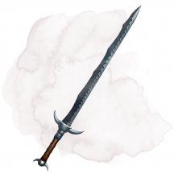
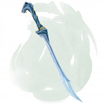
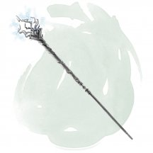
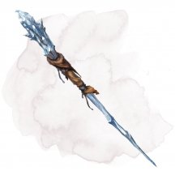
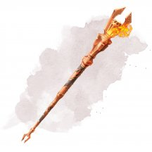

- Зелье, очень редкое
- Рекомендованная стоимость: 2 501-25 000 зм
Это прозрачное и густое масло сверкает от крошечных серебристых включений. Масло может покрыть одно рубящее или колющее оружие или до 5 рубящих или колющих боеприпасов. Нанесение масла занимает 1 минуту. В течение часа покрытые предметы считаются магическими и предоставляют бонус +3 к броскам атаки и урона.
Магические предметы
Официальные материалы от Wizards of the Coast и от издательств, поддерживаемых этой компанией.
- Чудесный предмет, очень редкий
- Рекомендованная стоимость: 5 001-50 000 зм
Вы можете использовать это устройство для полётов при условии, что ваш вес (включая то, что вы носите или нёсете) не превышает 300 фунтов. Махолёт имеет скорость полёта 30 футов, и он перемещается в соответствии с вашими устными указаниями, пока вы едете на нём. Он не может парить. Если махолёт теряет своего пилота во время полёта, он падает и на 1к6 + 4 дней теряет возможность летать.
Махолёт имеет длину 8 футов, размах крыльев 14 футов и весит 25 фунтов.

- Оружие (любой меч, наносящий рубящий урон), очень редкое (требуется настройка)
- Рекомендованная стоимость: 5 001-50 000 зм
Если вы атакуете этим магическим мечом предмет и попадаете, кости урона оружия причиняют цели максимальный урон.
Если вы атакуете этим оружием существо, и при броске атаки выпадает «20», эта цель получит дополнительно 14 рубящего урона. После этого бросьте ещё к20. Если выпадет «20», вы отрубаете одну из конечностей цели, а эффект этого определяет Мастер. Если у существа не было конечностей, вы отрубаете часть его тела.
Кроме того, вы можете произнести командное слово меча, чтобы клинок начал излучать яркий свет в радиусе 10 футов и тусклый свет в пределах ещё 10 футов. Повторное произнесение этого слова или убирание меча в ножны гасит свет.
- Оружие (длинный меч), очень редкое (требуется настройка)
- Рекомендованная стоимость: 5 001-50 000 зм
Вы получаете бонус +1 к броскам атаки и урона, совершённым этим магическим оружием. Кроме того, один раз в каждый ваш ход вы можете использовать одно из следующих свойств, если вы держите меч:
- Сразу же после того, как вы используете действие Атака для атаки этим мечом, вы можете позволить одному существу в пределах 60 футов от вас реакцией совершить одну атаку оружием.
- Сразу же после того, как вы совершаете действие Рывок, вы можете позволить одному существу в пределах 60 футов от вас реакцией переместиться на максимум своей скорости.
- Сразу же после того, как вы совершите действие Уклонение, вы можете позволить одному существу в пределах 60 футов от вас реакцией получить преимущества действия Уклонение.
- Посох, очень редкий (требуется настройка)
- Рекомендованная стоимость: 5 001-50 000 зм
Этот посох можно использовать как магический боевой посох, предоставляющий бонус +1 к броскам атаки и урона им.
У посоха есть 10 зарядов для описанных ниже свойств. Он ежедневно восстанавливает 1к6 + 4 заряда на рассвете. Если вы истратили последний заряд, бросьте к20. Если выпадет «1», посох уничтожается в безобидной вспышке потусторонней энергии.
Мистическая атака. Когда вы попадаете рукопашной атакой с помощью посоха, вы можете израсходовать до 3-х его зарядов. За каждый расходуемый вами заряд цель дополнительно получает 1к8 урона электричеством.
Мистический побег. Если вы получаете урон, держа посох, вы можете реакцией израсходовать 3 заряда посоха, после чего вы становитесь невидимым и телепортируетесь вместе с любым снаряжением, которое вы несёте или носите, на расстояние до 60 футов в свободное пространство, которое вы можете видеть. Вы остаетесь невидимым до начала вашего следующего хода или до тех пор, пока не совершите атаку, не наложите заклинание или не нанесёте урон.
- Чудесный предмет, очень редкий (требуется настройка)
- Рекомендованная стоимость: 5 001-50 000 зм
Эта мягкая фиолетовая шапочка украшена вышивкой в виде извилин мозга.
Бонусным действием, когда на вас надета эта шапка, вы можете излучить психическую энергию в виде 60-футового конуса. Каждое существо в этой области должно совершить спасбросок Интеллекта Сл 15. При провале существо получает 5к8 психического урона и становится ошеломлённым на 1 минуту. В случае успеха существо получает вдвое меньше урона. В конце каждого своего хода ошеломлённое существо может повторить спасбросок, оканчивая состояние ошеломления на себе при успехе.
После того, как это бонусное действие будет совершено, его нельзя будет совершить снова до следующего рассвета.
- Оружие (боевой молот), очень редкое (требуется настройка)
- Рекомендованная стоимость: 5 001-50 000 зм
Этот магический молот имеет 3 заряда. Бонусным действием вы можете потратить 1 заряд и ударить этим молотом по земле, создав круг светящихся рун радиусом 15 футов с центром в точке удара. Пока вы находитесь внутри этой области, ваш молот светится соответствующими рунами, и вы получаете бонус +3 к броскам атаки и урона, совершённым этим молотом. Рунический круг исчезает через 1 минуту, когда вы создаете другой рунический круг или когда вы оканчиваете рунический круг бонусным действием.
Этот молот восстанавливает 1к3 израсходованных зарядов ежедневно на рассвете.

- Оружие (любой меч), очень редкое (требуется настройка)
- Рекомендованная стоимость: 5 001-50 000 зм
Если вы попадаете атакой, используя этот магический меч, цель получает дополнительный урон холодом 1к6. Кроме того, пока вы держите этот меч, вы обладаете сопротивлением урону огнём.
При температуре, не превышающей 0 °C, клинок испускает яркий свет в радиусе 10 футов и тусклый свет в радиусе ещё 10 футов.
Когда вы вынимаете оружие из ножен, вы можете погасить все источники немагического огня в пределах 30 футов. Это свойство можно использовать не чаще раза в час.
- Чудесный предмет, очень редкий (требуется настройка)
- Рекомендованная стоимость: 5 001-50 000 зм
Навигационный шар представляет собой полую сферу диаметром 7 футов, сделанную из тонкого, полированного мифрила с оттиском большой руны Скае (облако) на её внешней поверхности. Шар парит в 10 футах над полом и связан с конкретным облачным замком, позволяя контролировать высоту и перемещения замка, пока находится в замке. Если шар будет уничтожен или покинет замок, высота и местоположение замка останутся фиксированными пока шар не вернут в замок или не заменят новым.
Действием вы можете создать один из следующих эффектов, если коснётесь шара:
- Замок передвигается со скоростью 1 миля в час по прямой в направлении, выбранном вами, пока замок не остановится, его не остановят или другое действие не будет использовано, чтобы изменить направление его движения. Если его движение должно привести к контакту с поверхностью, замок выполняет мягкую посадку.
- Замок, если движется, начинает постепенно тормозить.
- Замок делает медленный поворот на 90 градусов по или против часовой стрелки (поворачиваясь, например, к северу или востоку передом). Замок может совершать поворот пока движется по прямой линии.
- Любое существо, касающееся шара, знает высоту, на которой находится основание замка над землёй или водой под ним.
- Чудесный предмет, очень редкий (требуется настройка заклинателем)
- Рекомендованная стоимость: 5 001-50 000 зм
Могущественная иллюзионистка дома Димиров изначально разработала эти наручи, чтобы создавать сразу несколько малых иллюзий [minor illusion]. Однако сила наручей простирается далеко за пределы иллюзий.
Пока вы в этих наручах, каждый раз, когда вы накладываете заговор, в тот же ход вы можете бонусным действием наложить этот же заговор ещё раз.
- Оружие (кинжал), очень редкое (требуется настройка)
- Рекомендованная стоимость: 5 001-50 000 зм
Лезвия этих ножниц имеют множество зазубрин и вмятин, но все равно чисто режут. Ножницы функционируют как магический кинжал. Оружие обладает следующими свойствами:
- Вечно острые. Когда вы попадаете атакой, совершаемой этими ножницами, цель дополнительно получает 1к6 урона силовым полем .
- Разрезание нитей. Когда вы попадаете по существу атакой, совершаемой этими ножницами, вы можете изменить судьбу этого существа. Пока цель не закончит продолжительный отдых, броски атаки против неё наносят критическое попадание при результате «19» или «20» на к20. Как только это свойство будет использовано, оно не сможет быть использовано снова до следующего рассвета.
- Оружие (любое), очень редкое (требуется настройка)
- Рекомендованная стоимость: 5 001-50 000 зм
Это оружие украшено витиеватой золотой филигранью и темно-синими и бордовыми драгоценными камнями. Вы получаете бонус +1 к броскам атаки и урона, совершённым этим магическим оружием. Кроме того, вы получаете владение навыками Запугивание и Убеждение, если вы ими ещё не владели.
Использование заклинаний. Оружие имеет 5 зарядов. Вы можете бонусным действием потратить 1 или более зарядов, чтобы наложить одно из следующих заклинаний (Сл спасброска 16): приказ [command] (1 заряд), область истины [zone of truth] (2 заряда), принуждение [compulsion] (4 заряда), изгнание [banishment] (4 заряда) или подчинение личности [dominate person] (5 зарядов).
Оружие восстанавливает 1к4 израсходованных зарядов ежедневно на рассвете.
- Оружие (любое оружие, наносящее дробящий урон), очень редкое
- Рекомендованная стоимость: 5 001-50 000 зм
Вы получаете бонус +2 к броскам атаки и урона, совершённым этим магическим оружием.
Это оружие было создано для разрушения структур, созданных силой, например, созданных узилище [forcecage] или силовая стена [wall of force]. Удар этим оружием по структуре магической силы Большого размера или меньше, автоматически разрушает эту структуру. Если целью является Огромного размера силовая структура или больше, это оружие разрушает ее часть размером 20 футов в кубе.
- Чудесный предмет, очень редкий (требуется настройка)
- Рекомендованная стоимость: 5 001-50 000 зм
Этот длинный, тонкий осколок льда примерно размеров кинжала. Руна Иса (лёд) мерцает внутри него. Осколок обладает следующими свойствами, которые функционируют, пока он при вас.
Холодное прикосновение. Действием вы можете прикоснуться к поверхности воды и заморозить её в сферической области 10 футов радиусом и центром в точке прикосновения. Как только вы воспользуетесь этим свойством, вы не можете им более воспользоваться пока не совершите короткий или продолжительный отдых.
Друг мороза. Вы получаете сопротивление урону огнём.
Ледяная мантия. Действием вы можете дотронуться до себя или другого существа мокрым пальцем. Вода создаст ледяную мантию защиты. В следующий раз в течении минуты, когда цель прикосновения получает дробящий, рубящий или колющий урон, этот урон снижается до 0, а мантия разрушается. Как только вы воспользуетесь этим свойством, вы не можете им более воспользоваться пока не совершите короткий или продолжительный отдых.
Вой зимы. Действием вы можете сотворить заклинание метель [sleet storm] (Сл спасброска 17). Вы восстанавливаете возможность использовать эту особенность после того как совершите короткий или продолжительный отдых.
Дар мороза. Вы можете перенести магию осколка на не магический предмет плащ или пару обуви нарисовав на нём руну Иса пальцем. Перенос требует 8 часов работы, и чтобы осколок и предмет находились в 5 футах друг от друга. В конце этого ритуала, осколок уничтожается, а на предмете появляется голубая руна и он получает следующие свойства:
- Плащ. Плащ становится редким магическим предметом, который требует настройки. Пока вы носите его, вы получаете сопротивление огню и преимущество на проверки Ловкости (Скрытность), проходящие в снежных местностях.
- Обувь. Пара обуви становится редким магическим предметом, который требует настройки. Пока вы носите её, вы игнорируете ограничения труднопроходимых местностей пока ходите и можете ходить по воде.
- Доспех (кожаный), очень редкий (требуется настройка)
- Рекомендованная стоимость: 5 001-50 000 зм
Вы получаете бонус +1 к КД, пока вы носите этот доспех.
Пальто имеет 3 заряда. Когда вы попадаете атакой по раненому существу, вы можете потратить 1 заряд, чтобы дополнительно нанести 1к10 урона некротической энергией по цели. Пальто восстанавливает 1к3 израсходованных заряда ежедневно на рассвете.

- Чудесный предмет, очень редкий (требуется настройка)
- Рекомендованная стоимость: 5 001-50 000 зм
Этот прекрасный плащ сделан из чёрного шёлка, переплетённого тонкими серебристыми нитями. Пока вы его носите, вы обладаете следующими преимуществами:
- Вы получаете сопротивление урону ядом.
- Вы получаете скорость лазания, равную скорости ходьбы.
- Вы можете перемещаться вверх, вниз и вдоль вертикальных поверхностей, а также вверх ногами по потолку, оставляя руки свободными.
- Вы не можете запутаться ни в какой паутине, и можете перемещаться сквозь паутину как если бы она была просто труднопроходимой местностью.
- Вы можете действием наложить заклинание паутина [web] (Сл спасброска 13). Паутина, создаваемая этим заклинанием, заполняет в два раза большую площадь чем обычно. Это свойство нельзя использовать повторно до следующего рассвета.
- Чудесный предмет, очень редкий (требуется настройка)
- Рекомендованная стоимость: 5 001-50 000 зм
По краю этой серовато-фиолетовой накидки серебряной нитью вышиты древние руны.
Накидка имеет 3 заряда. Бонусным действием, пока вы носите плащ, вы можете потратить 1 из его зарядов, чтобы увеличить себя, получив следующие преимущества:
- Ваш размер увеличивается на одну категорию — например, со Среднего до Большого. Если для увеличения вашего размера на одну категорию недостаточно места, вместо этого вы становитесь максимально возможным размером в доступном пространстве.
- Вы совершаете проверки и спасброски Силы с преимуществом.
- Когда вы попадаете броском атаки с использованием оружия или безоружным ударом, вы можете добавить свой бонус мастерства к урону от атаки.
Эти преимущества действуют в течение 10 минут или до тех пор, пока вы бонусным действием не отмените их. Накидка ежедневно на рассвете восстанавливает 1к3 израсходованных зарядов.

- Чудесный предмет, очень редкий
- Рекомендованная стоимость: 5 001-50 000 зм
Эти железные подковы изготавливаются комплектом по четыре штуки. Если все четыре прикрепить к копытам лошади или подобного существа, они позволят ему перемещаться как обычно, но паря в 4 дюймах от земли. Этот эффект позволяет существу пересекать нетвёрдые и неустойчивые субстанции, такие как вода и лава, а также стоять на них. Существо не оставляет следы и игнорирует труднопроходимую местность. Кроме того, оно может перемещаться с обычной скоростью до 12 часов в день, не получая истощение за форсированный марш.
- Чудесный предмет, очень редкий (требуется настройка)
- Рекомендованная стоимость: 5 001-50 000 зм
Это магическое транспортное средство представляет собой лист диаметром 10 футов, плавающий на воде. У него есть усики, которые перемещают его по суше и по поверхности воды (но не под водой), а также по воздуху. Его скорость ходьбы, полёта и плавания равна 20 футам, и он может парить. Он перемещается в соответствии с вашими устными указаниями, пока вы едете на нем.
Кувшинка может беспрепятственно перевозить до 300 фунтов. Она может нести вдвое больший вес, но движется с половинной скоростью, если грузоподъемность превышает нормальную.
- Чудесный предмет, очень редкий
- Рекомендованная стоимость: 5 001-50 000 зм
Когда этот маленький мешочек пурпурного порошка высыпают на мёртвого гуманоида или часть мёртвого гуманоида, прах поглощается останками. При желании мертвое существо возвращается к жизни в новом теле, будто на останки было наложено заклинание реинкарнация [reincarnate].
- Чудесный предмет, очень редкий (требуется настройка)
- Рекомендованная стоимость: 5 001-50 000 зм
На картине знаменитого художника Дкези Квана изображен Константори — прекрасный придворный, которому заплатили баснословные деньги, дабы он согласился позировать. Люди до сих пор спорят, действительно ли внешность Константори соответствует той, что на холсте. Этот портрет является одной из нескольких картин, написанных по заказу покойной Даяни Гристорн — криминального авторитета, которая часто дарила подобные произведения своим самым уважаемым соратникам.
Разум. Портрет Константори -это разумный предмет, законно-злого мировоззрения с Интеллектом 14, Мудростью 12 и Харизмой 8. Он может слышать в радиусе 120 футов и обладает темным зрением на расстоянии 60 футов, но не может видеть ничего позади себя.
Портрет может разговаривать на Общем, Драконьем и Эльфийском языках, как если бы это был живой человек, хотя рот Константори не двигается. Всякий раз, когда разговор происходит в пределах области слуха портрета, то он охотно собирает секреты, имена таинственных рассказчиков, важные события или любые политические беседы.
Индивидуальность. Портрет Константори требователен, снисходителен и тщеславен. Он не любит, когда его закрывают или убирают с глаз долой, и громко осуждает любого, кто пытается вытащить его из позолоченной рамы.
Изобилие информации. Основная задача картины — наблюдать, а затем вспоминать разговоры. За последние несколько десятилетий Портрет Константори незаметно подслушивал бесчисленные беседы и теперь обладает невероятным количеством информации: от преступных заговоров до тайных паролей. Мастер решает, что именно известно картине, а что нет.
Пока вы настроены на эту картину, вы можете действием телепатически связаться с ней на любом расстоянии при условии, что вы и картина находитесь на одном плане существования. Однако картина не может телепатически связаться с вами. Для поддержания телепатического контакта с картиной требуется ваша концентрация (как при концентрации на заклинании).
Охранный портрет. Пока вы настроены на портрет, вы можете приказать ему охранять свое местоположение от одного или нескольких существ, которых вы обозначите врагами. Портрет будет защищать это место до тех пор, пока вы не прикажете ему прекратить или пока не закончится ваша настройка на картину.
Портрет имеет 3 заряда. Если существо, определенное как враг, начинает свой ход в его зоне видимости, он тратит 1 заряд на заклинание волшебная стрела [magic missile] (3 стрелы), нацеленное на это существо. Картина восстанавливает все потраченные заряды на рассвете.
Портрет представляет собой Маленький предмет с КД 12 и 20 хитами, а также обладает иммунитетом к урону от яда. Пока портрет находится в позолоченной раме, он весит 15 фунтов. Если у портрета остается хотя бы 1 хит и на него накладывается заговор починка [mending], он восстанавливает 2к6 хитов.

- Посох, очень редкий (требуется настройка)
- Рекомендованная стоимость: 5 001-50 000 зм
Этот посох можно использовать как магический боевой посох, предоставляющий бонус +2 к броскам атаки и урона им. Он также обладает описанными ниже дополнительными свойствами. Каждое из свойств не может быть повторно использовано до следующего рассвета.
Молния. Если вы попали рукопашной атакой, используя этот посох, вы можете причинить цели дополнительный урон электричеством 2к6.
Гром. Если вы попали рукопашной атакой, используя этот посох, вы можете заставить посох издать громовой рокот, слышный в пределах 300 футов. Цель, по которой вы попали, должна преуспеть в спасброске Телосложения Сл 17, иначе она станет ошеломлённой до конца вашего следующего хода.
Удар молнии. Вы можете действием выпустить из кончика посоха молнию линией шириной 5 футов и 120 футов длиной. Все существа в этой линии должны совершить спасбросок Ловкости Сл 17, получая урон электричеством 9к6 при провале или половину этого урона при успехе.
Удар грома. Вы можете действием заставить посох издать громовой гул, слышный в пределах 600 футов. Все существа в пределах 60 футов от вас (исключая вас) должны совершить спасбросок Телосложения Сл 17. При провале существо получает урон звуком 2к6 и становится оглохшим на 1 минуту. При успехе существо получает половину урона и не становится оглохшим.
Гром и молния. Вы можете действием использовать одновременно свойства «Удар молнии» и «Удар грома». Это не учитывается при подсчёте того, использовали ли вы эти свойства в этот день, тратится использование лишь непосредственно этого свойства.
- Посох, очень редкий (требуется настройка волшебником)
- Рекомендованная стоимость: 5 001-50 000 зм
Этот посох из полированного серого дерева украшен многочисленными рунами, вырезанными по всей его длине. Посох имеет 10 зарядов и восстанавливает 1к6 + 4 израсходованных заряда ежедневно на рассвете. Если вы израсходуете последний заряд, бросьте к20. Если выпадет «1», посох обращается в пыль и уничтожается.
Держа посох, вы можете действием израсходовать 2 или более его зарядов, чтобы наложить одно из следующих заклинаний, используя свои Сл и бонус атаки заклинателя: благословение удачи [fortune’s favor] (2 заряда), силовая волна [pulse wave] (3 заряда) или центр притяжения [gravity sinkhole] (4 заряда).
Новая возможность. Если вы держите посох и проваливаете спасбросок против заклинания, которое нацелено только на вас, вы можете превратить свой провал в успех. Это свойство не может быть использовано снова до следующего рассвета.

- Посох, очень редкий (требуется настройка волшебником, друидом, колдуном или чародеем)
- Рекомендованная стоимость: 5 001-50 000 зм
Вы получаете сопротивление урону холодом, пока держите этот посох. У этого посоха есть 10 зарядов. Держа его, вы можете действием потратить часть зарядов и наложить им одно из следующих заклинаний, используя свою Сл спасброска от заклинания: град [ice storm] (4 заряда), конус холода [cone of cold] (5 зарядов), ледяная стена [wall of ice] (4 заряда) или туманное облако [fog cloud] (1 заряд).
Посох ежедневно восстанавливает 1к6 + 4 заряда на рассвете. Если вы истратили последний заряд, бросьте к20. Если выпадет «1», посох превращается в воду и уничтожается.

- Посох, очень редкий (требуется настройка волшебником, друидом, колдуном или чародеем)
- Рекомендованная стоимость: 5 001-50 000 зм
Вы получаете сопротивление урону огнём, пока держите этот посох.
У этого посоха есть 10 зарядов. Держа его, вы можете действием потратить часть зарядов и наложить им одно из следующих заклинаний, используя свою Сл спасброска от заклинания: огненная стена [wall of fire] (4 заряда), огненные ладони [burning hands] (1 заряд) или огненный шар [fireball] (3 заряда).
Посох ежедневно восстанавливает 1к6 + 4 заряда на рассвете. Если вы истратили последний заряд, бросьте к20. Если выпадет «1», посох чернеет, разваливается на угли и уничтожается.